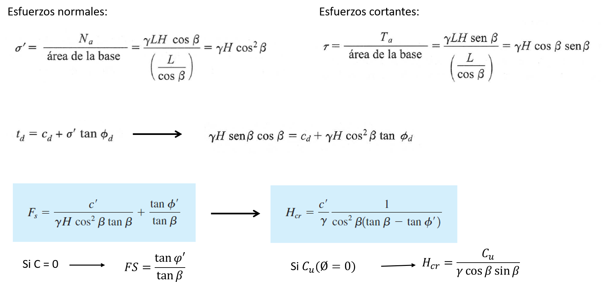
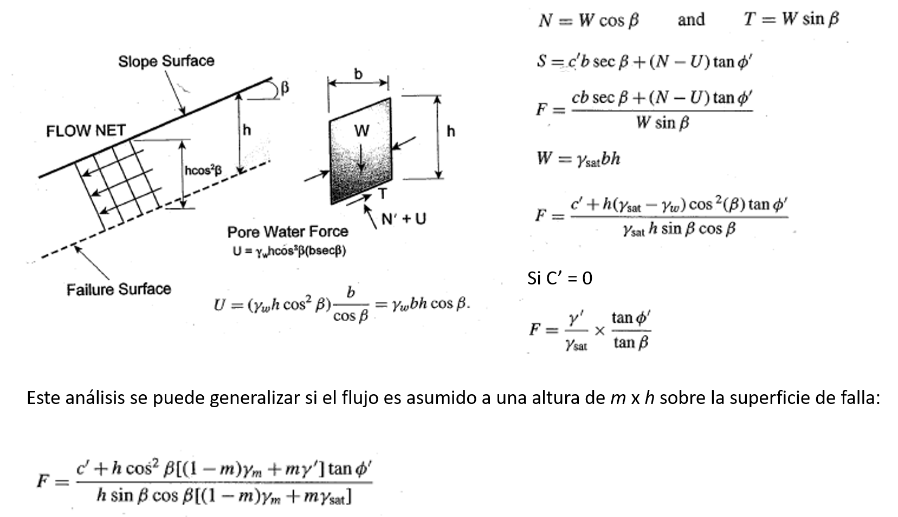

CARTOGRAFÍA GEOTÉCNICA
Metodos Físicos
Prof. Edier Aristizábal


Metodos Físicos
- Son basados en modelar los procesos que dan lugar a los deslizamientos utilizando modelos de estabilidad de laderas (base física).
- La mayoría de modelos con base física utilizan el modelo de talud infinito, por lo que son aplicables para modelar deslizamientos planares superficiales.
- Pueden ser subdivididos en modelos estáticos, que no incluyen el componente del tiempo, y modelos dinámicos, los cuales utilizan la entrada de un intervalo de tiempo como la entrada del próximo intervalo. Estos modelos consideran la respuesta transitoria del agua en el suelo de la ladera a la lluvia.
- Los modelos hidrológicos son incorporados asumiendo un flujo paralelo a la ladera en un estado estático como función de la pendiente y el área de drenaje, o de forma dinámica evaluando el proceso completo desde la lluvia a la respuesta transitoria del agua en el suelo.
- Los modelos dinámicos de susceptibilidad a deslizamientos señalan la variación espacial y temporal de los deslizamientos, por lo que son aplicables a la evaluación de la amenaza.
Ventajas
- En general se pueden obtener mapas de amenaza de forma cuantitativa a través del factor de seguridad y probabilidades de falla.
- Existen diferentes aproximaciones a la física del problema.
Desventajas
- Requieren una gran cantidad de información de entrada de detalle, a partir de ensayos de laboratorio o mediciones en campo.
- Solamente recomendables para pequeñas áreas a escalas detalladas.
- Consumen mas tiempo y recursos para obtener la información necesaria.
- La parametrización de los modelos puede ser complicada, en especial la distribución espacial de la profundidad del suelo, la cual juega un papel fundamental.
- El grado de simplificación del problema
Los hechos ocurren por destino (causa – efecto) o por suerte (aleatoriamente)?
Laplace (1814) Given for one instant an intelligence which could comprenhend all the forces by which nature is animated
and the respective situation of the beings who compose it -an intelligence sifficiently vast to submit
these data to analysis - it would embrace in the same formula the movement of the greatest bodies of the
universe and those of the ligthest atom; for it, nothing would be uncertain and the future, as the past,
would be present to its ayes
Henri Poincaré ...even if it were the case that the natural laws had no longer any secret for us, we could still
only know the initial situation approximately. If that enabled us to predict the succeeding situation
with the same approximation, that is all we require, and we should say that the phenomenon had been
predicted, that it is governed by laws. But it is not always so - it may happen that small differences
in the initial conditions produce very great ones in the final phenomena. A small error in the former
will produce an enormous error in the latter...
Baecher & Christian (2003) Las probabilidades es una reconciliación de dichos puntos de vista extremos. Y se soporta en que el
mundo es de hecho impredecible, pero principalmente por nuestro desconocimiento inadecuado de su funcionamiento.
El mundo puede o no comportarse por necesidad (causa – efecto), pero en cualquier evento nosotros somos
ignorantes del estado inicial y de los detalles de las leyes naturales, por lo tanto el mundo solo puede
describirse como si fuera aleatorio.
Métodos de estabilidad

Análisis Cinemático
Deslizamientos planares
Sin infiltración (en términos de esfuerzos efectivos)
Con infiltración (en términos de fuerzas)
Deslizamientos circulares
Análisis probabilístico
Método FOSM (first order second moment)
- Basado en el truncamiento de la serie de Taylor para la variable dependiente haciendo uso únicamente de la primera derivada (Primer Orden).
- Las salidas y las entradas se expresan como medias y desviaciones estándar para las variables involucradas (Segundo Momento).
Ventajas
- Formulación matemática simple
- No requiere gran esfuerzo computacional
- Para cuantificar la influencia de cada variable independiente en la varianza de la variable dependiente.
Desventajas
- No siga una distribución completa de la variable dependiente (correr riesgos en esta distribución).
Métodos Acoplados

SHALSTAB

TRIGRS

SHIA-Landslide